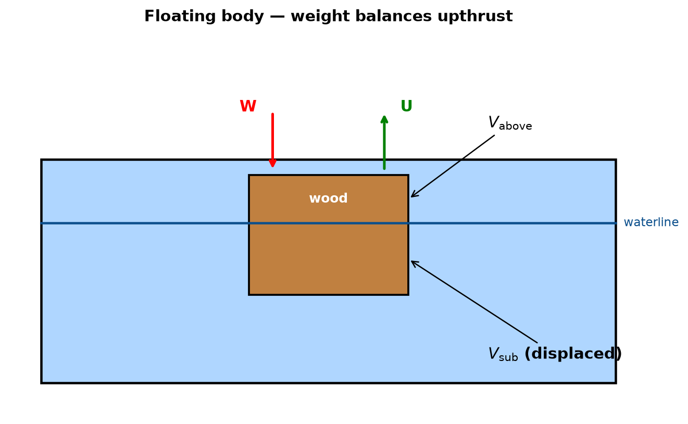
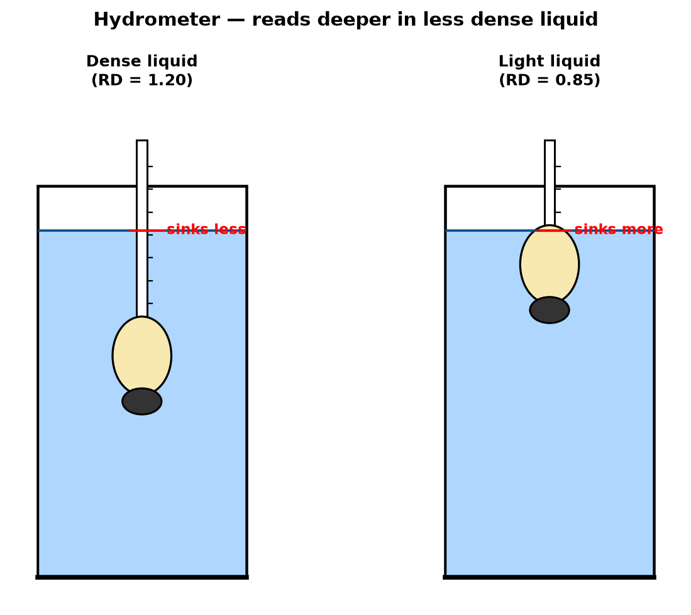

Density & Relative Density — Lesson 3
Flotation & the Hydrometer
Greenoak International School · Grade 10 Physics
Recall
- \(\rho = m/V\).
Water = 1000 kg m⁻³.
- \(\text{RD} =
\rho_\text{sub}/\rho_\text{water}\), no units.
- Upthrust \(U =
W_\text{fluid displaced} = \rho_f V_d g\).
- RD < 1 → floats. RD > 1 →
sinks.
- Today: how does it float, and how
much sticks out.
The floating puzzle
- A wood block of density 500 kg m⁻³ is dropped in
water (1000 kg m⁻³).
- It floats — some of it sticks up
above the waterline.
- How much is above the waterline?
- Answer: exactly as much as needed to make upthrust
= weight.
The free-body picture

Law of Flotation
A floating body displaces its own weight of the fluid in
which it floats.
- Equivalently: for a floating body, weight =
upthrust. \[W = U\]
- The body floats at the depth at which exactly
enough fluid is pushed aside to support it.
Derivation — fraction submerged
- Weight of body: \(W =
\rho_\text{body}\, V\, g\).
- Upthrust from displaced fluid: \(U = \rho_\text{fluid}\, V_\text{sub}\,
g\).
- At flotation, \(W =
U\): \[\rho_\text{body}\, V\, g =
\rho_\text{fluid}\, V_\text{sub}\, g\]
- Cancel \(g\) and
rearrange: \[\boxed{\ \dfrac{V_\text{sub}}{V}
= \dfrac{\rho_\text{body}}{\rho_\text{fluid}}\ }\]
Worked Example 1 — wood in water
A wooden block has density \(600\ \text{kg
m}^{-3}\). It floats in water of density \(1000\ \text{kg m}^{-3}\). What fraction of
the block is below the waterline?
- Formula. \[\dfrac{V_\text{sub}}{V} =
\dfrac{\rho_\text{body}}{\rho_\text{fluid}}\]
- Substitute. \[\dfrac{V_\text{sub}}{V} = \dfrac{600}{1000} =
0.60\]
- Interpret. 60 % of the wood is
under water; 40 % is above.
Worked Example 2 — iceberg
Seawater has density \(1030\ \text{kg
m}^{-3}\) and ice has density \(920\
\text{kg m}^{-3}\). What fraction of an iceberg is above the
water?
- Fraction submerged. \[\dfrac{V_\text{sub}}{V} = \dfrac{920}{1030} =
0.893\]
- Fraction above. \[1 - 0.893 = 0.107 \approx 11\%\]
- So “90 % below, 10 % above” is roughly right for a
real iceberg.
Worked Example 3 — ship
A ship of mass \(2.0 \times 10^6\
\text{kg}\) floats in seawater (\(\rho
= 1030\ \text{kg m}^{-3}\)). Calculate the volume of seawater it
displaces. (\(g = 10\ \text{m
s}^{-2}\).)
- Weight of ship. \[W = mg = 2.0 \times 10^6 \times 10 = 2.0 \times
10^7\ \text{N}\]
- Law of flotation: weight of
displaced water = ship’s weight.
- Volume of displaced water: \[V_d = \dfrac{W}{\rho g} = \dfrac{2.0 \times
10^7}{1030 \times 10}\]
- Compute: \[V_d \approx
1943\ \text{m}^3\]
Common mistake — “floating means no upthrust”
- Floating does not mean upthrust is
zero.
- Upthrust is exactly equal to the
weight.
- Zero upthrust would mean zero submerged volume —
the body would not touch the water at all.
Ship in salt water vs river water
- Salt water denser than river water.
- Same ship, same weight → less water
needed to supply the upthrust.
- So the ship rides higher in salt
water, lower in fresh (river) water.
- This is why ships carry a Plimsoll
mark — different load-lines for salt and fresh, tropics and
winter.
The Hydrometer
- Device that measures the density
(or RD) of a liquid directly.
- Is just a sealed glass tube that
floats vertically.
- The deeper it sinks, the
less dense the liquid.
- Reading is taken at the liquid
surface on the scale.
Hydrometer construction

- Wide bulb at the bottom → large
displacement, so it floats.
- Lead shot below the bulb → keeps
the stem vertical (low centre of gravity).
- Thin stem with a scale → small
change in density produces a large change in the depth it sinks, so the
scale is sensitive.
How the hydrometer works
- Hydrometer has fixed weight \(W\).
- In any liquid: \(W =
\rho_L\, V_\text{sub}\, g\).
- Denser liquid → smaller \(V_\text{sub}\) → floats higher.
- Less dense liquid → larger \(V_\text{sub}\) → sinks deeper.
- The stem scale is pre-calibrated so the reading at
the surface is the RD of the liquid.
Why the stem is narrow
- A narrow stem means a small change in density
shifts the hydrometer up or down by a large
distance.
- Large spacing between scale marks → high
sensitivity (easy to read to 0.001).
- Fat stem would give a bunched scale and poor
sensitivity.
Where hydrometers are used
- Lead-acid car batteries — RD of
the acid tells the state of charge.
- Breweries / wine — RD of the wort
tracks sugar level during fermentation.
- Dairies — the
lactometer is a hydrometer calibrated for milk;
adulterated (watered) milk has lower RD.
- Petrol stations — checking fuel
density to detect adulteration.
Worked Example 4 — hydrometer reading
A hydrometer floats with 20 cm of its stem above the
surface in water and only 8 cm of its stem above the
surface in a liquid. The uniform stem has cross-section \(0.50\ \text{cm}^2\) and the whole
hydrometer has mass 30 g. Volume of the bulb =
26 cm³. Find the RD of the liquid.
- Volume submerged in water. Total
volume − stem-above volume.
- Total volume = 26 + length_of_stem × 0.5 (keep as a
check only).
- Submerged in water: \(V_w
= 26 + (L - 20)\times 0.5\), where \(L\) is stem length.
- Easier: the mass stays 30 g, so
\(V_\text{sub}\) scales as \(1/\rho\).
- In water: \(m = \rho_w
V_w \Rightarrow V_w = 30/1.0 = 30\ \text{cm}^3\).
- In liquid: \(V_L = V_w -
\Delta\), where \(\Delta = (20 -
8)\times 0.5 = 6\ \text{cm}^3\) deeper → less
submerged? no, deeper = more submerged. Here only 8 cm above → sank
deeper → \(V_L = V_w + 6 =
36\ \text{cm}^3\).
- \(\text{RD} = V_w / V_L =
30/36 = 0.83\).
Don’t confuse these instruments
- Hydrometer — measures
relative density of a liquid.
- Hygrometer — measures
humidity (water vapour in air).
- Hypsometer — measures
altitude (via boiling point).
- Barometer — measures
atmospheric pressure.
- Manometer — measures a
pressure difference in a fluid.
- Spectrometer — splits
light into its spectrum (unrelated).
- WAEC frequently puts these six as MCQ
distractors.
Lactometer — milk test
- Pure cow’s milk has RD about
1.030.
- Added water lowers the RD toward 1.000.
- A lactometer calibrated between 1.000 and 1.050
lets a farmer or trader detect adulteration quickly.
- WAEC 2011 asked this question directly.
Summary
- Law of flotation. Floating body
displaces its own weight of fluid. \[W =
U\]
- Fraction submerged. \[\dfrac{V_\text{sub}}{V} =
\dfrac{\rho_\text{body}}{\rho_\text{fluid}}\]
- Hydrometer: floats; reads lower in denser liquid;
reads higher (sinks deeper) in less dense liquid.
- Plimsoll line, batteries, lactometer — real-world
applications.
Class task
Copy each into your exercise book; show working; give units.
- A block of density 750 kg m⁻³ floats in water. What fraction of its
volume is above water?
- A ship of mass \(5.0 \times 10^5\)
kg floats in fresh water. Find the volume of water it displaces. (\(g = 10\).)
- State the Law of Flotation.
- Explain, in two sentences, why a hydrometer is made with a wide bulb
at the bottom and a thin stem.
Homework
Bring written answers to next week’s lesson.
- (WAEC 2007.) A wooden block of mass 800 g and density 500
kg m⁻³ floats in water. Calculate the volume of the block that is
submerged. (\(g = 10\).)
- (WAEC 2011.) A hydrometer used to test the purity of milk
is called a __.
- (JAMB 1992.) A solid of density 2500 kg m⁻³ is placed in a
liquid of density 800 kg m⁻³. State whether it floats or sinks and give
a reason.
- (WAEC 2004.) A ship floats higher in sea water than in
fresh water. Give a reason.
- An iceberg (density 920 kg m⁻³) floats in sea water (density 1025 kg
m⁻³). Calculate the percentage of the iceberg’s volume that is above the
waterline.
What we learned this week
- Density \(\rho = m/V\). Lesson 1.
- Relative density \(\text{RD} =
\rho_\text{sub}/\rho_\text{water}\); no unit. Lesson 1.
- Upthrust \(U = \rho_f V_d g =\) weight of fluid
displaced (Archimedes). Lesson 2.
- Apparent weight \(W'
= W - U\); RD from weights. Lesson 2.
- Flotation. \(W = U\); fraction submerged = \(\rho_\text{body}/\rho_\text{fluid}\).
Lesson 3.
- Hydrometer. Variable-depth
flotation reads RD directly. Lesson 3.